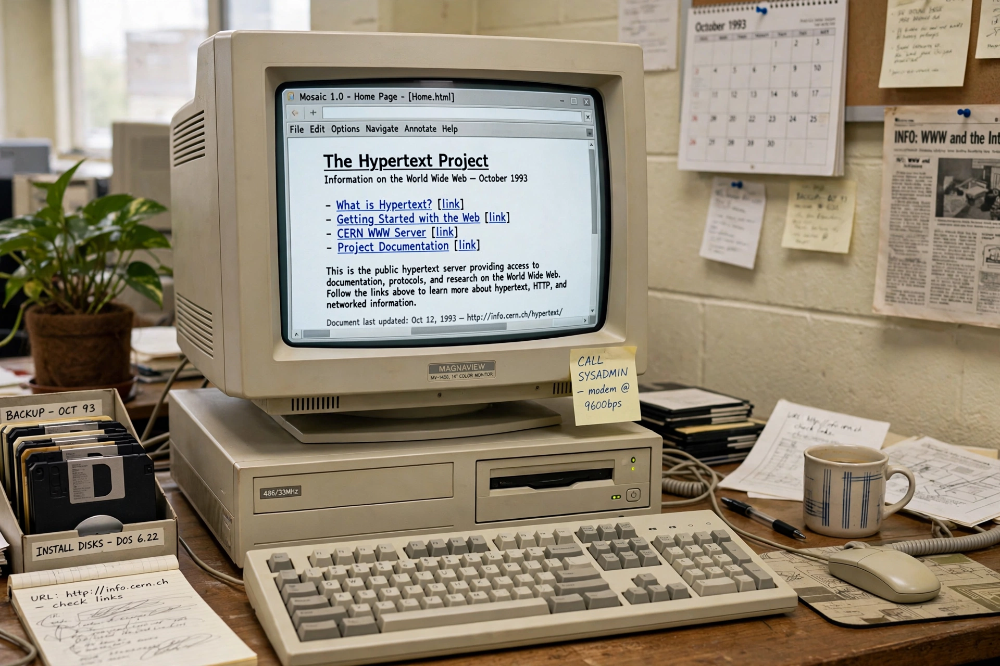

Introduction
Technology is the application of conceptual knowledge to achieve practical goals, especially in a reproducible way. It includes tools, machines, systems and methods — from stone tools and the wheel to the steam engine, electricity, the computer and the Internet. Technological change has reshaped agriculture, industry, medicine, warfare and everyday communication throughout history.
Selected article

[Image: an early World Wide Web browser window displayed on a vintage desktop computer]The World Wide Web is an information system of interlinked documents accessed over the Internet. It was invented by Tim Berners-Lee at CERN in 1989, originally as a way for physicists to share documents, and opened to the public in the early 1990s. Web pages, browsers, hyperlinks and search engines made the Internet usable by a mass audience; services such as Google later became its front door for many users.
Did you know...
- ... that the first computer programmer is widely considered to be Ada Lovelace, in the 1840s?
- ... that ARPANET, a forerunner of the Internet, first connected four university computers in 1969?
- ... that the transistor, invented at Bell Labs in 1947, underpins virtually all modern electronics?
Major topics
- Computing: Computer · Software · Internet · Artificial intelligence · Smartphone
- Engineering: Civil · Electrical · Mechanical · Aerospace
- Transport: Automobile · Aircraft · Rocket · Train
- Energy: Renewable energy · Nuclear power · Solar power
- Companies: Apple · Microsoft · Google
Selected biography
Thomas Edison (1847–1931) was an American inventor and businessman whose work included the phonograph, a practical electric light bulb and systems for electric power distribution. He held more than a thousand US patents and helped create the industrial research laboratory.